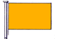
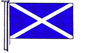
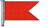
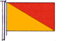
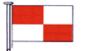
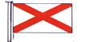
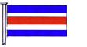

| 211. Показаният флаг означава:  |
|
Флаг "Q" - моят кораб не е заразен, искам свободна практика Флаг "Н" - имам пилот на борда Флаг "С" - Да, утвърдителен Фраг "V" - Нужна ми е помощ |
| 212. Показаният флаг означава:  |
|
Фраг "V" - Нужна ми е помощ Флаг "M" - на борда си имам лекар Флаг "Q" - моят кораб не е заразен, искам свободна практика Флаг "G" - искам пилот |
| 213. Показаният флаг означава:  |
|
Флаг "С" - Да, утвърдителен Флаг "M" - на борда си имам лекар Флаг "В" - товаря / разтоварвам опасен товар Флаг "Q" - моят кораб не е заразен, искам свободна практика |
| 214. Показаният флаг означава:  |
|
Флаг "С" - Да, утвърдителен Флаг "В" - товаря / разтоварвам опасен товар Флаг "U“ - Вие отивате към опасност Флаг "О" - човек зад борда |
| 215. Показаният флаг означава:  |
|
Флаг "С" - Да, утвърдителен Флага "U“ - Вие отивате към опасност Флаг "О" - човек зад борда Флаг "В" - товаря / разтоварвам опасен товар |
| 216. Показаният флаг означава:  |
|
Флаг "В" - товаря / разтоварвам опасен товар Флага "U“ - Вие отивате към опасност Флаг "V" - Нужна ми е помощ Флаг "С" - Да, утвърдителен |
| 217. Показаният флаг означава:  |
|
Фраг "V" - Нужна ми е помощ Флаг "О" - човек зад борда Флаг "В" - товаря / разтоварвам опасен товар Флаг "С" - Да, утвърдителен |
| 218. Един кабелт е: |
|
равен на 100 фута една десета от морската миля една дванадесета част от морската миля една десета от артилерийската миля |
| 219. Един сажен е: |
|
равен на 3 фута равен на два ярда или 6 фута равен на един ярд равен на 6 фута или един ярд |
| 220. Един ярд е: |
|
равен на 3 фута равен на един сажен равен на 6 фута равен на 2 фута |